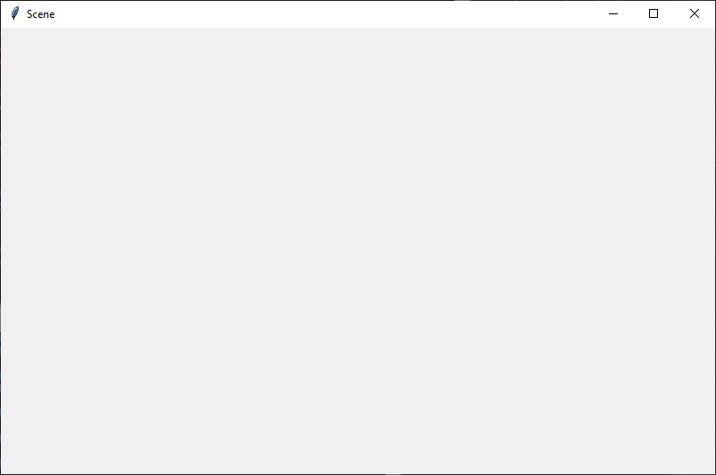

03 Prove Milestone: Writing Functions
Purpose
Prove that you can write functions with parameters and call those functions with arguments.
Problem Statement
Modern computers are capable of performing all sorts of calculations to produce numbers. However, they are also capable of performing calculations to produce art, illustrations, animations, movies, and music.
Assignment
During this prove milestone and the next prove assignment, you will write a Python program that draws a semi-realistic outdoor scene in a computer window. To draw the shapes in the scene, your program will call functions in a Python library named Draw 2-D. Your program can draw any outdoor scene that you like as long as it meets these requirements:
- The scene must be outdoor and include part of the sky.
- The sky must have clouds.
- The scene must include repetitive objects such as blades of grass, trees, leaves on a tree, birds, flowers, insects, fish, pickets in a fence, dashed lines on a road, buildings, bales of hay, snowmen, snowflakes, or icicles.
- Each of the objects in your scene should be drawn in its own function such as
draw_sky,draw_cloud,draw_ground,draw_flower,draw_fence,draw_fish, etc.
During this milestone, you will write code that draws the sky, the ground, and clouds in your scene. During the next lesson, you will write code that completes your scene. As you write your program, write it so that it draws objects in the order of farthest away to nearest. For example, you program should draw the sky first, then clouds, then the ground, then trees, then insects in the trees. Be creative.
Scene Gallery
The following example scene was drawn by a student's Python program and fulfills the requirements of this assignment.
If you would like ideas about what your program can draw, look at the scenes in this gallery. All the scenes in the gallery were drawn by programs written by former CSE 111 students.
Helpful Documentation
- The prepare content for the previous lesson explains how to call functions.
- The prepare content for this lesson explains how to write functions.
- The documentation for the Draw 2-D library includes an overview, function reference, color chart, and example program.
- The following videos walk through examples of using functions to draw with
tkinter.- Drawing with Functions, part 1 (16 minutes)
- Drawing with Functions, part 2 (15 minutes)
Steps
Do the following:
- Download the
draw2d/draw2d.pyfile and save it in the same folder where you will save your program. - Using VS Code, create a new file and copy and paste the following code into your new file. This beginning code imports the functions from the Draw 2-D library and creates a window and a canvas that your program will draw into.
# Import the functions from the Draw 2-D library # so that they can be used in this program. from draw2d import \ start_drawing, \ draw_line, draw_oval, draw_arc, draw_rectangle, \ draw_triangle, draw_polygon, draw_text, \ finish_drawing def main(): scene_width = 800 scene_height = 500 # Call the start_drawing function in the draw2d.py library # which will open a window and create a canvas. canvas = start_drawing(scene_width, scene_height, "Scene") # Call your drawing functions such # as draw_sky and draw_ground here. # Call the finish_drawing function # in the draw2d.py library. finish_drawing(canvas) # Define your functions such as # draw_sky and draw_ground here. # Call the main function so that # this program will start executing. main() - Save your new file as
scene.pyand run your new program. When you run it, it should open a window that contains an empty canvas as shown in the following figure. - Starting at line 30 of your new program, write your functions to draw the sky, ground, and clouds.
- Starting at line 20, write calls to your drawing functions.
Intent
The intent of this assignment is not to train you to become a world-famous cloud artist. Instead, the intent is to teach you how to apply the following principles to a real programming problem:
- Dividing a large program into parts (functions)
- Writing a function
- Deciding what needs to be a parameter in a function definition
- Calling a function with different argument values to produce different results
- Understanding how to separate the parts of a function that should stay the same and the parts that depend on parameters, in order to make the function as reusable as possible.
Your program must be divided into functions such as
draw_sky, draw_cloud,
draw_ground, draw_bird,
draw_grass_blade, or draw_insect. The
headers for the draw_sky, draw_ground,
and draw_pine_tree functions in the
example program of the Draw 2-D
documentation are good examples for the headers of all your draw_*
functions. Below are a few other examples of headers for functions
that you might want to include in your program. However, these are
simply examples, and you can change them in your program or even
exclude them from your program.
def draw_house(canvas, house_left, house_bottom): def draw_bird(canvas, bird_center, bird_top): def draw_pebble(canvas, pebble_left, pebble_top, pebble_radius): def draw_picket(canvas, picket_left, picket_bottom): def draw_grass_blade(canvas, blade_left, blade_top, blade_height):
The following call graph shows the functions for a well-designed
scene drawing program. From the call graph we see that this program
is divided into small functions (draw_sky,
draw_ground, draw_sun,
draw_cloud, etc.). We see that the main
function calls the draw_sky and
draw_ground functions. The draw_sky
function calls the draw_sun, draw_cloud,
and draw_bird functions, and so on. This is a good
design because each function is relatively small and performs just
one task. Also, because the draw_flower function has
parameters (not shown in the diagram), a programmer can write
multiple calls to the draw_flower function, which will
easily draw multiple flowers in his scene. The
draw_cloud, draw_bird, and
draw_tree functions also have parameters, and a
programmer can write multiple calls to them, which will easily draw
multiple clouds, birds, and trees. This is a good design.
The next call graph shows the functions for a different scene
drawing program. Notice that this program isn't separated into small
functions. Instead, all the code to draw an outdoor scene is inside
the main function. The scene that this program draws
may look very nice and have just as many objects as a well-designed
program. However, the main function in this second
program will be very long, complex, and confusing. This is a poor
design.
main function calls the Draw 2-D functions to draw
all the objects in the scene. The main
function will be very long and confusing.Testing Procedure
Verify that your program works correctly by following each step in this testing procedure:
- Run your program and verify that it correctly opens a window and draws within that window an outdoor scene that contains at least the sky, clouds, and the ground.
Submission
On or before the due date, return to I-Learn and report your progress on this milestone.